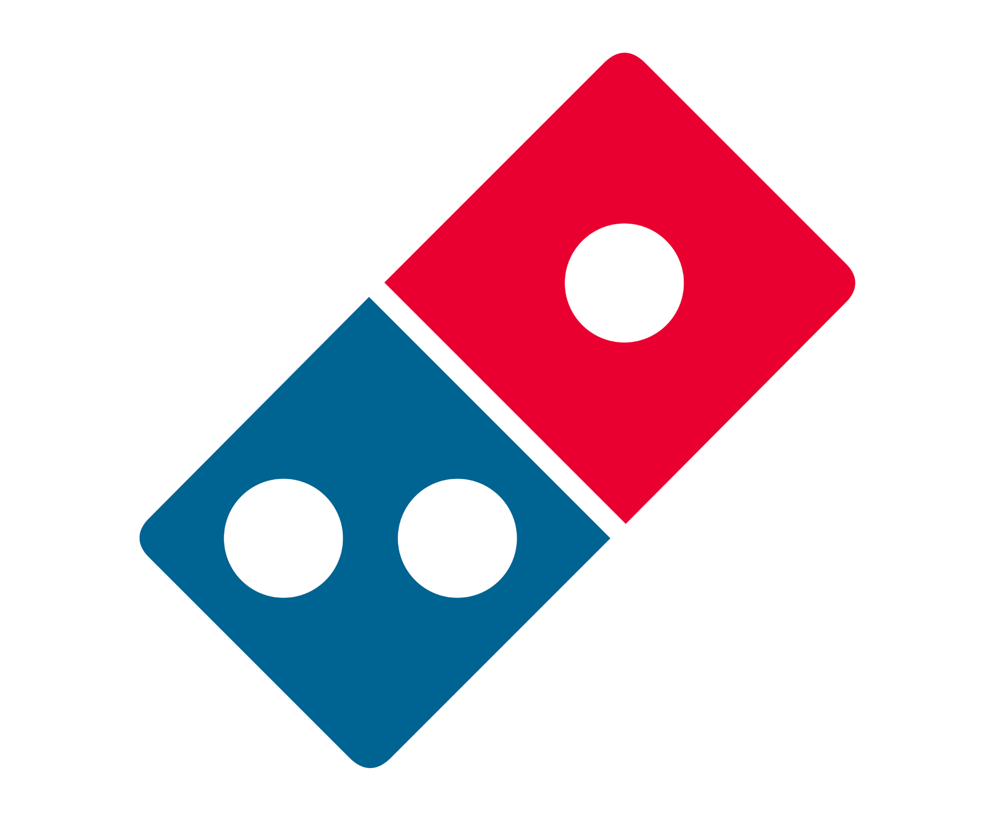

B4 Daily Task List
Simply click the finish button when you complete a prep item.
Do not refresh the page if you do not want to lose progress.
If you accidentally press a button & a prep task is not actually finished, you can click the button again to go back.